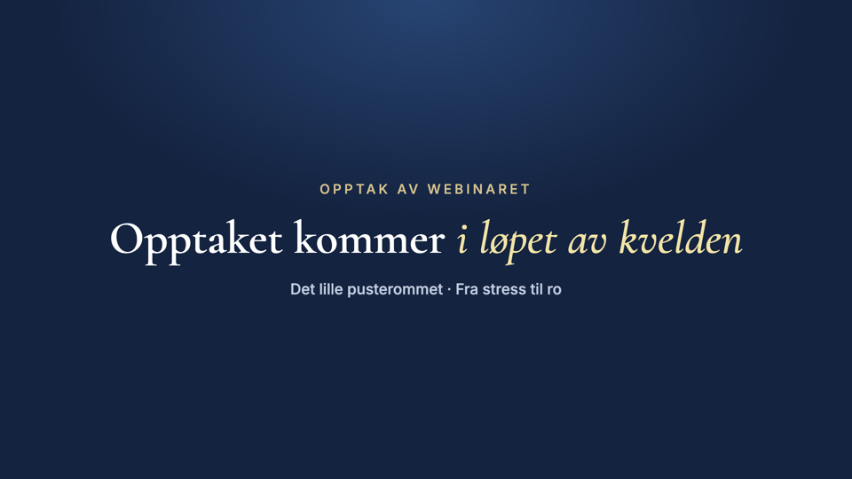

Søndag 15. november
Slik legger du inn opptaket
Siden med opptaket er ferdig. Du trenger bare å bytte ut én video, uten å røre noe annet på siden. Det tar fem klikk.
kl. 19.00Last opp senest da. E-posten med opptaket går ut kl. 20.00, og en lang video trenger litt tid etter opplasting før den kan spilles av.
Fem steg
- Last ned opptaket av webinaret til maskinen din.
- Åpne siden «Opptak av webinaret» i Kajabi.Vi sender deg lenken rett til redigeringen av siden før søndag.
- Klikk på videoen midt på siden.Innstillingene for videoen åpner seg i menyen til venstre.
- Klikk «Replace» (eller «Upload») under videoen i menyen, og velg opptaket fra maskinen din.Vent til opplastingen er ferdig.
- Klikk «Save» øverst til høyre. Ferdig!
Til nå ligger denne videoen der

Sjekk at det virker
Åpne siden i et privat vindu i nettleseren og trykk play. Ser du fortsatt den midlertidige videoen, vent noen minutter og last siden på nytt.
Får du det ikke til? Send oss lenken til opptaket på Slack, så legger vi det inn for deg før kl. 19.00.